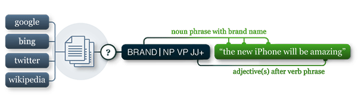

pattern.metrics
The pattern.metrics module is a loose collection of performance and accuracy measurements, including tools for profiling the speed of Python functions, precision and recall for classifiers, agreement across different voters (Fleiss), string similarity (Levenshtein + Dice), string readability (Flesch), descriptive statistics.
It can be used by itself or with other pattern modules: web | table | en | search | vector | graph.

Documentation
- Profiler
- Accuracy, precision and recall
- Agreement
- String similarity
- String readability
- Statistics (mean, histogram, quantile, ...)
Profiler
In general, Python is highly optimized with C extensions (e.g., string manipulation, dictionary access, regular expressions). The Pattern module is optimized with a number of caching mechanisms. To test if your own code is fast or slow you need to profile it. You can then optimize the slowest parts, typically the three slowest functions. You should do this after all the code has been written, since you can only measure speed if the program first gives the correct results.
duration() takes a function + its (optional) arguments and returns the running time in seconds.
profile() takes a function and returns a string of performance statistics for the top 20 slowest parts.
duration(function, *args, **kwargs)
profile(function, *args, **kwargs)
>>> from pattern.metrics import profile
>>> from pattern.en import parse, Sentence
>>> def main():
>>> for i in range(100):
>>> s = Sentence(parse("the cat sat on the mat"))
>>>
>>> print profile(main)
Accuracy, precision and recall
Say you have an is_spam() algorithm that yields True or False. You test it with a 1,000 e-mail messages of which 200 are spam. Say it identifies 180 messages as spam. The accuracy is 90% (180/200). But what does this really mean? The algorithm may have tagged 180 good e-mails as spam (= false positives) and 180 bad e-mails as ham (= false negatives). No real harm is done in terms of is_spam(), but a has_cancer() algorithm is an entirely different matter. Care has to be taken when evaluating the quality of predictive algorithms.
Precision and recall are measurements based on the actual amount of true positives – e.g., where is_spam() yields True for e-mails that really are spam.
- precision: how well messages that are not spam are discarded (= rule out false positives).
- recall: how well possible spam messages are selected (= rule out false negatives).
confusion_matrix() takes a function that returns True or False for a given document (e.g., a string), and a list (document, bool)-tuples for testing; where bool=True marks documents that should be selected by your function. It returns a (TP, TN, FP, FN)-tuple with the amount of true positives, true negatives, false positives and false negatives.
test() takes a function and a list of (document, bool)-tuples and returns a tuple with (accuracy, precision, recall, F1-score), based on the confusion matrix.
confusion_matrix(match=lambda document:False, documents=[(None,False)])test(match=lambda document:False, documents=[])
| Metric | Definition | Description |
| accuracy | A = TP+TN / (TP+TN+FP+FN) | percentage of correct classifications |
| precision | P = TP / (TP+FP) | percentage of correct positive classifications |
| recall | R = TP / (TP+FN) | percentage of positive cases correctly classified as positive |
| F1-score | F = 2*P*R / (P+R) | harmonic mean of precision and recall |
For example:
>>> from pattern.metrics import confusion_matrix, test
>>>
>>> def is_spam(string):
>>> words = (w.strip(',.?!"') for w in string.lower().split(' '))
>>> return len([w for w in words if w in ('lottery', 'viagra')]) > 0
>>>
>>> documents = [
>>> ('Want to go for coffee?', False),
>>> ('In attachment is the latest report.', False),
>>> ('Here is the website I was talking about.', False),
>>> ('We can improve our classifier by excluding "Viagra".', False),
>>> ('Buy Viagra online!', True),
>>> ('Your e-mail address was selected in our lottery!', True)
>>> ]
>>> print confusion_matrix(is_spam, documents)
>>> print test(is_spam, documents)
(2, 3, 1, 0)
(0.83, 0.67, 1.00, 0.80)
In this example, is_spam() correctly classifies 5 out of 6 messages (83% accuracy). It identifies all spam messages (100% recall), which is good. However, it also promotes a message that is not spam to the junk folder, which is bad. Only 2 out of 3 messages tagged as spam are in reality spam (67% precision). Here is room for improvement. Notice how there is a trade-off between recall (no spam in inbox) and precision (real e-mails in junk folder).
The following helper functions simply call test() internally and return a single metric:
accuracy(match=lambda document:False, documents=[])precision(match=lambda document:False, documents=[])recall(match=lambda document:False, documents=[])F1(match=lambda document:False, documents=[])
F(match=lambda document:False, documents=[], beta=1)
Agreement
Fleiss' kappa agreement measures reliability or consensus in ratings given by different voters. Say you and a colleague are writing an is_subjective() algorithm to detect opinions, sentiments, customer feedback, etc. It uses a list of adjectives (e.g., fantastic, disappointing) tagged with values between 0.0-1.0 (subjectivity). To avoid bias, you both tag the list and take the average of the two values for each adjective. However, say that each word you tagged 0.0 your colleague tagged 1.0. This results in low agreement, indicating that the function won't work properly because you didn't reach a consensus of what is subjective and what is not.
agreement() returns the reliability as a number between -1.0 and +1.0 (where +0.7 is reliable). The given matrix is a list in which each row represents a task. Each task is a list with the number of votes per category. Each column represents a category.
agreement(matrix)
>>> m = [ # 0.0 0.5 1.0 SUBJ
>>> [ 1, 1, 0 ], # important
>>> [ 0 0, 2 ], # fantastic
>>> [ 0, 1, 1 ], # disappointing
>>> [ 2, 0, 0 ], # scientific
>>> ]
>>> from pattern.metrics import agreement
>>> print agreement(m)
0.24
String similarity
Levenshtein edit distance measures the difference between two strings, as the number of operations (insert, delete, replace) required to transform one string into the other. Another similarity measure is Dice's coefficient, based on the number of shared bigrams – e.g., night and nacht have one common bigram ht.
similarity() returns the similarity of string1 and string2 as a number between 0.0 and 1.0.
The given metric can be LEVENSHTEIN or DICE.
levenshtein(string1, string2) # Returns the edit distance.similarity(string1, string2, metric=LEVENSHTEIN)
String readability
Flesch reading ease measures the readability of a string based on word count and word length (number of syllables). The readability() function returns the readability as a number between 0.0 and 1.0:
readibility(string)
| Readability | Description |
| 0.9-1.0 | easily understandable by 11-year olds |
| 0.6-0.7 | easily understandable by 13- to 15-year olds |
| 0.3-0.5 | best understood by university graduates |
Statistics
In mathematics, an average is a measure of the "middle" of a data set (or sample, usually a list of numbers). An average can be calculated in different ways, but commonly the mean is used. The arithmetic mean is the sum of the values divided by the sample size: [1,2,4] → 1+2+4 / 3 = 2.3. Another average measure is the median, found by sorting the values from lowest to highest value and picking the middle one: [1,2,4] → 2.
The standard deviation measures the amount of variation in a sample. Low standard deviation means the values tend to be close to the mean. If you draw it, you get a steep, narrow curve. High standard deviation means the values are spread out over a large range. If you draw it you get a flat, wide curve.
mean(list) # [1, 2, 4] => 2.33median(list) # [1, 2, 4] => 2variance(list, sample=True) # Use sample=False for population variance.stdev(list) # [1, 2, 4] => 1.53
Histogram
A histogram divides a list of numbers into intervals. This gives an idea of the distribution of the data: which interval has the most values? Are there more values in lower intervals? The histogram() command returns a dictionary with k items: {(start, stop): [values], ...}, with equal (start, stop) intervals between min(list) and max(list).
histogram(list, k=10, range=None)
>>> s = [1, 1, 1, 1, 2, 2, 2, 3, 3, 4, 5, 6, 7, 8, 9]
>>> for (i,j), values in sorted(histogram(s, k=4).items()):
>>> m = i + (j-i)/2 # midpoint
>>> print i, j, m, values
1.0 3.0 2.0 [1, 1, 1, 1, 2, 2, 2, 3, 3]
3.0 5.0 4.0 [4, 5]
5.0 7.0 6.0 [6, 7]
7.0 9.0 8.0 [8, 9]
Moment
A moment is a measure of the "shape" of a list of numbers. For example, the 2nd moment (which is the variance) measures the width. The 3rd moment measures skewness or asymmetry of the sample. If > 0.0, relatively few values are higher than the mean. If < 0.0, relatively few values are lower than the mean. The 4th moment measures kurtosis or peakedness of the sample. If > 0.0, there is a sharp peak around the mean (more infrequent / extreme values). If < 0.0 there is a wide peak around the mean.
moment(list, k=1)skewness(list)kurtosis(list)
Quantile
The quantile() command returns the interpolated value from a sorted list of numbers at point p (0.0-1.0). The optional parameters a, b, c, d refer to the algorithm by Hyndman and Fan [1]. Quantiles can be used to create a box plot, useful for identifying outliers. For example: if a sample of temperature in your household comprises you (37°C), the cat (38°C), the refrigerator (5°C) and the oven (220°C) then the average temperature is 75°C, which of course is incorrect since the oven is an outlier. The boxplot() command returns a (min, Q1, Q2, Q3, max)-tuple for a given list of numbers, where Q2 is the median, Q1 is the lower 25-50% and Q3 is the upper 50-75%.
quantile(list, p=0.5, sort=True, a=1, b=-1, c=0, d=1)boxplot(list)
>>> s = [5, 37, 38, 220)
>>> print boxplot(s)
(5.0, 29.0, 37.5, 83.5, 220.0)
 you, the cat, the fridge and the oven you, the cat, the fridge and the oven |
Reference: Adorio E. (2008) http://adorio-research.org/wordpress/?p=125